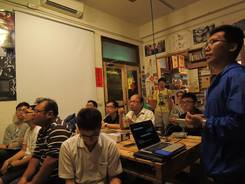

何謂「路上觀察學」
「路上觀察學」顧名思義，就是在「路上」進行「觀察」；加個「學」則帶了點鑽研的意味。
路上觀察學源自日本的「考現學」。相較於考古，考現學把眼光放在當代，記錄人類社會的生態。1986 年「路上觀察學會」成立，將眼光放在地上水溝蓋、路邊失去功能的物件...，以脫離實用性、違背都市秩序為切入點，享受觀察逸出的趣味。
著名的類似概念也出現在法國詩人波特萊爾筆下的「Flâneur」（漫遊者）——在巴黎的拱廊街下，保持距離、帶著反思、以及對都市文化的興趣，邊行邊看的人。
路上觀察學，發生於資本主義的街道中，帶著某種觀察之眼的人們，一代接一代，在時間的洪流中，於路上徘徊著。
誰是觀察者？
「觀察者把城市視為一種新型態的自然，
帶著一種眼光、一種反思、一種閒適，
對城市感興趣卻又若即若離，
用這樣的態度滑行於街道。」
為什麼要在台南做「路上觀察」
近年「台南學」興起，從小吃、老屋引發的熱潮，帶領更多人拜訪這座城市，各式建設未停歇。
然而在快速的發展下，由報章媒體帶頭、政府引導，集體朝向某些既定價值前進的同時，台南也彷彿成為了一個「代名詞城市」，不受到重視的價值卻日益消失。
台南路上觀察團，希望站在這個城市豐厚的文化底蘊上，以「觀察」的態度，認識「未曾見過的城市」，與土地建立連結，進而產生認同，建構一個「非官方版本」的台南。
- 三大計畫 -
路上觀察小聚
打造府城觀察平台
每月一次舉行。以「觀察」為題，進行讀書會與分享，透過閱讀、思考、對話，形塑台南觀察社群與風氣。
城市主題觀察
以觀察探索城市
由自身經驗出發，對城市提問，以觀察作為尋找答案的方法。過去曾進行牛肉湯觀察松、台南公園野餐觀察、台南城牆觀察松、城市記號(塗鴉)觀察等。
無差別街區觀察
打造府城觀察平台
身邊的街景是否千篇一律？跟著觀察團一起行走，發現平凡街廓蘊藏的驚奇，透過行走再次認識看不見的台南。2017年起一月一次、一起上路。
台南路上觀察團
成立於2015年4月，成員包含了各領域工作者，以遊走於路上為樂、對台南深深著迷。
台灣最早的路上觀察組織為2014年成立於台北的「路上觀察研修會」，在團長Takeshi Hayashi鼓勵下「台南路上觀察團」成立，目前進行超過 19次觀察聚會、以(飲食)牛肉湯、(歷史)城牆、 公園(場域)等為題的觀察行動。